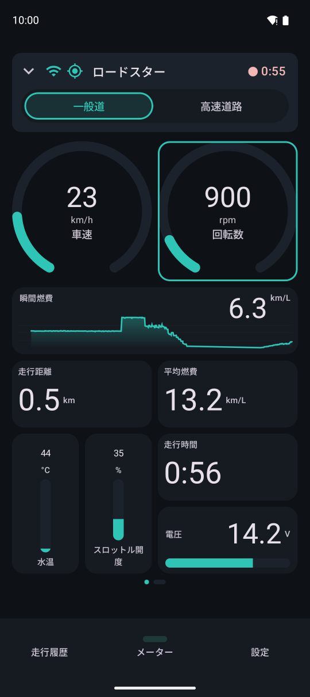
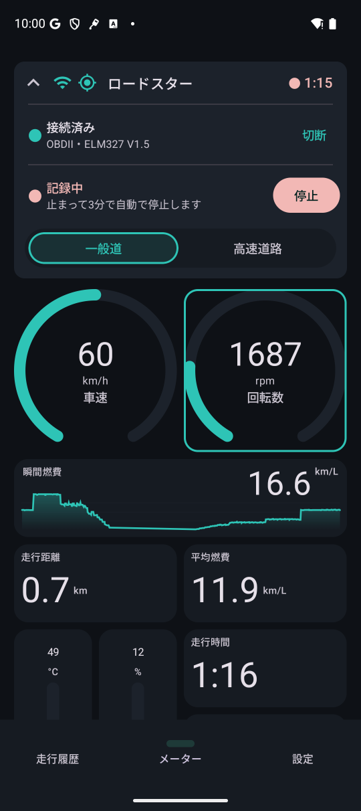
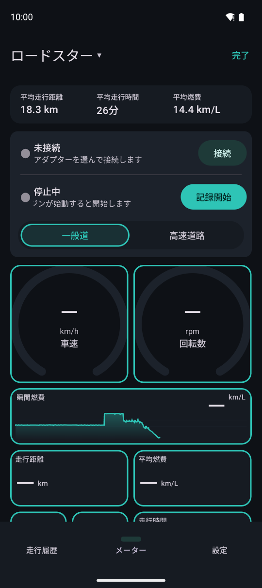
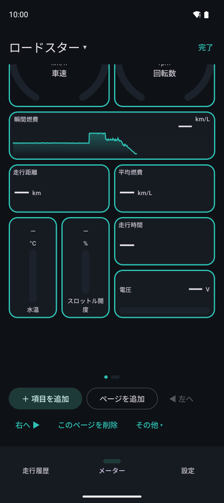
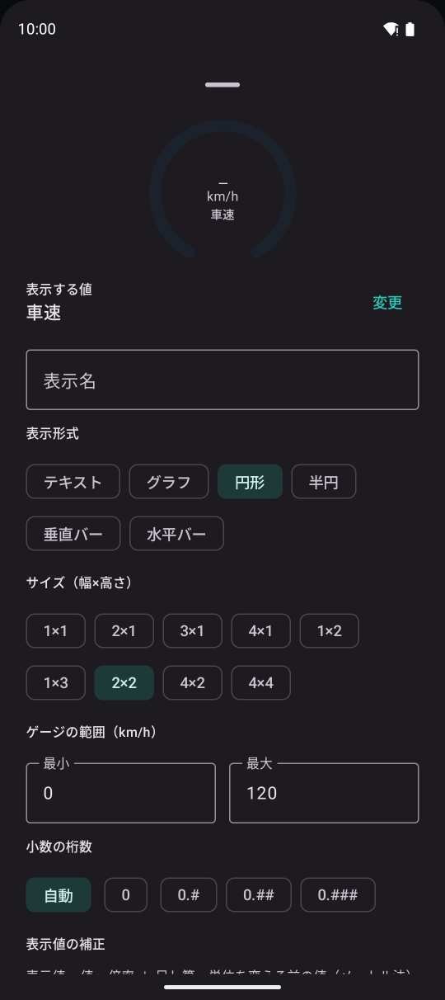

メーター
接続中は車速・回転数・燃費などをリアルタイムに表示します。項目・形・大きさ・並びはマスの範囲で自由に編集できます。
画面の見方

123456- 1接続・GPS の状態、車両の名前、記録中の時間。タップで開いて接続・記録の操作パネルが出ます
- 2走行モード（一般道／高速道路）
- 3メーターの項目（円形のゲージ）
- 4グラフの項目（直近の変化）
- 5テキスト・バーなどの項目
- 6ページマーカー。左右にスワイプしてページを切り替えます

123記録中に上部のカードをタップで開いた様子です。
- 1アダプターとの接続を切ります
- 2記録を止めます（記録していないときは「記録開始」になります）
- 3閉じるとメーターを広く表示できます
記録していないときはメーター上部に車両ごとのステータス（走行距離・時間・燃費など）を表示できます。タップで表示する項目を選べます。
メーターを編集する
メーターのどこかをロングタップすることで編集モードになります。記録していないときに限り、右上の「編集」をタップすることでも編集モードになります。走行中は編集できません（停車してからロングタップしてください）。編集終了は右上の「完了」をタップします。

12- 1編集を完了します
- 2項目に枠が出ます。タップで項目ごとの詳細設定、ドラッグで並べ替えができます

123編集画面の最下部メニューです。
- 1項目を足します
- 2ページを足します
- 3他のページへのコピー・高速道路用のページにする などのメニュー表示

1234項目の詳細設定です。この下には表示値の補正や警告（値を超えたら色と音で知らせる）などがあります。
- 1表示する値（車速・回転数・水温・瞬間燃費など）
- 2表示形式（テキスト・グラフ・円形・半円・バー）
- 3大きさ（幅×高さ）
- 4ゲージの範囲
メーターの配置は車両ごとに保存されます。車両の名前の横の ▾ から、使う車両を切り替えられます（記録中は切り替えられません）。
走行モード（一般道／高速道路）
メーターの「一般道」「高速道路」で手動で切り替えます。自動では切り替わりません。
- 速度超過のイベントの基準が変わります（設定の「走行中のイベント」で一般道・高速道路それぞれの速度を選べます）
- 記録中に切り替えるとその時刻が走行記録に残り、走行詳細では一般道と高速道路の距離・燃費を分けて表示することができます
- 新しい走行は一般道から始まります。休憩のあとに同じ走行の続きとして記録が始まったときは、モードを引き継いで記録します
- 高速道路モードでは 2 時間走るごとに休憩の目安を通知とメーターのカードで知らせます（15 分以上の停車でリセットされます）
- プレミアムプランでは高速道路用のメーターのページを作れます。高速道路モードに切り替えたときに自動でそのページへ移ります